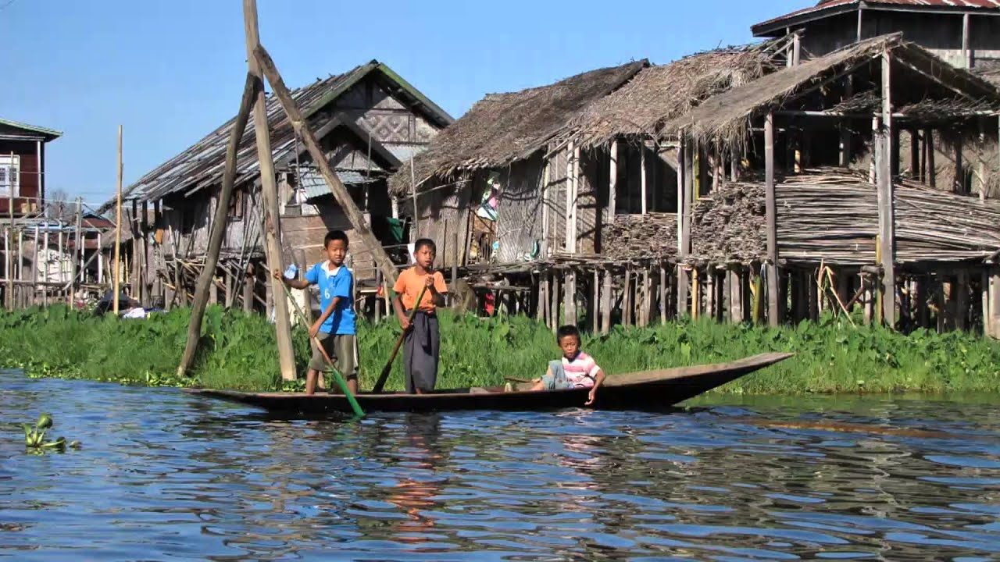
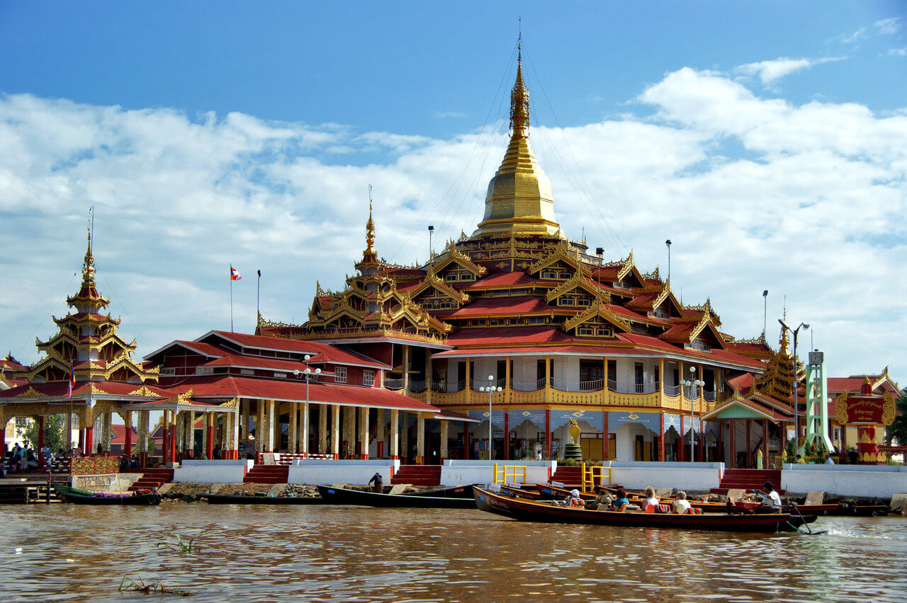
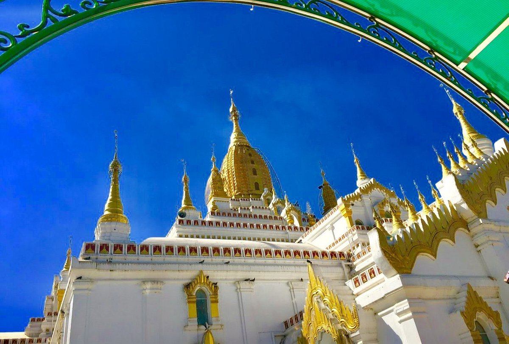

Done By Team Briffon
Inle Lake is the second largest freshwater lake in Myanmar which’s located in Nyaungshwe Township, Taunggyi District. Since,virtually everything such as local houses, markets and hotels are built in the lake, visitors will feel unique vibes of the area once they arrived at there. And also, it’s a place where visitors can see beautiful sceneries and floating gardens which they might have never seen in other ordinary places.

Hpaung Daw U Pagoda is Buddhist temple which is located in Yawama village, on the shore of Inle Lake. Temple houses five golden images of Buddha and interior of the temple is decorated with mural paintings which depicts Buddha’s stories from ancient times. And also, pagoda is well known for celebrating festivals which include long boat racing competitions. Festival is usually held for over 20 days during the 7th month of the Burmese calendar.
Sulamuni Pagoda is huge white pagoda with elegant structures and designs which’s located on a small hill in Taunggyi. It was built in 1994 for the purpose of commemorating a centenary of Taunggyi’s establishment. Sulamuni pagoda is not just the place where visitors can recognize about ancient Burmese religious culture but also the place where they can see wonderful sightseeing as well. Reviews from several websites has suggested that between September and December is the best time to visit to there.
Shwe Phone Pwint- is situated at the east mountain of the Taunggyi, nearby to Padamyar Cave. It’s about 8 km from city center and visitors can observe stunning views of Taunggyi and Inle Lake sceneries and peaceful environment once they visited there. Pagoda looks like it’s floating on top at night as it has lights which shines brightly the entire night.

Nga Phe Kyaung Monastery is wooden monastery which was built in stilts around 19th century. Monastery is well known for cats which are trained to jump through hoops. However, when you get there, you’re more likely to see lovely cats which’re lazing around. Monastery is also famous for displaying the collection of Buddha statutes and small models of pagodas from different parts of Myanmar and Tibet. Moreover, visitors can experience peaceful environment of the place and beautiful sceneries of Inle lake and floating gardens as well.